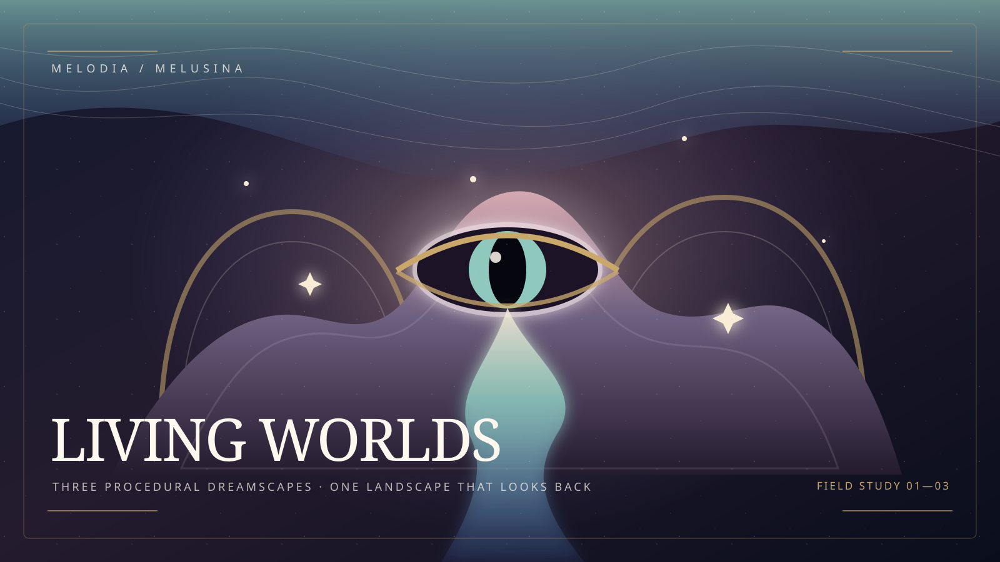

WebGL field study · Melodia / Melusina
Living Worlds
The first view is beautiful. The second contains something unexplained. The third proves the landscape has anatomy.
Preparing procedural dreamscape…
Dream sequence
Chapter II · Biological Revelation
Faraway Mother
The mountain inhales. A pupil larger than a lighthouse opens inside its folds, and a tear-river remembers the way home.
- Motifs
- fabric terrain · eyelid fold · tear river
- Interaction
- drag to orbit · 1–3 to travel
Drag to disturb the dream
The dream is resting
WebGL could not wake this landscape.
The illustrated field note remains available while the real-time renderer is unavailable.